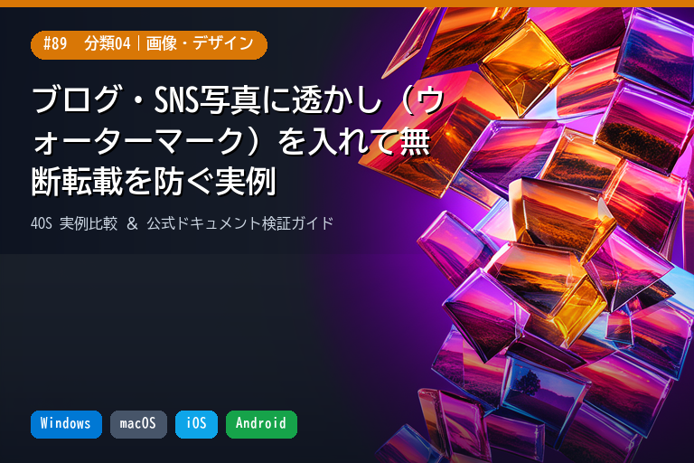

#89｜分類04: 画像・イラスト・デザイン制作 2026-11-26

ブログ・SNS写真に透かし（ウォーターマーク）を入れて無断転載を防ぐ実例｜Windows・macOS・iOS・Android
せっかく撮影した素敵な写真や、時間をかけて制作したイラスト。ブログやSNSに投稿した際、意図しない「無断転載」や「勝手な二次利用」をされるのは非常に心苦しいものです。
そこで重要になるのが「透かし（ウォーターマーク）」の挿入です。しかし、一枚ずつ編集ソフトを開いて文字を入れるのは非常に手間がかかります。
この記事では、Windows、macOS、iOS、Androidの主要4OSにおいて、標準機能や公式ツールを最大限に活用して、効率的に透かしを入れるための実践的な手順を解説します。あわせて、Webサイトのパフォーマンスを落とさないための画像最適化についても触れていきます。
4OS比較早見表
| OS | 推奨ツール・機能 | 特徴 | 向いている用途 |
|---|---|---|---|
| Windows 11 | PowerToys (Image Resizer) | 大量の画像をバッチ処理するのに最適 | ブログ用画像の量産、一括リサイズ |
| macOS | Finder クイックアクション | 標準機能だけで素早くテキストを追加可能 | 制作中の画像へのクイックな透かし入れ |
| iOS | 写真アプリ / ショートカット | モバイルで撮影後すぐに加工が可能 | SNS投稿用の即時編集 |
| Android | Google フォト / ギャラリー | 直感的なUIでテキストオーバーレイが可能 | 外出先での簡易的な著作権保護 |
1. Windows 11 での実例手順
Windows環境では、Microsoft公式のシステムユーティリティである「PowerToys」を活用するのが最も効率的です。
手順：公式ユーティリティ「Image Resizer（パワーツイーズ）」による一括処理
- 準備: Microsoft Storeから「PowerToys」をインストールし、設定で画像拡張子を選択します。
- 操作:
- エクスプローラー上で、透かしを入れたい複数の画像を選択します。
- 右クリックメニューから「Image Resizer（パワーツイーズ）」＞「追加のオプションを表示」をクリック。
- 「テキスト」タブを開き、「文字列」に透かし名を入力し、フォントサイズ・色を調整します。
- 「位置」で座標を設定後、「適用」ボタンを押す（またはショートカットキー
Alt+Shift+Wを押して即座に処理）。
標準機能・公式アプリでの制限事項
- 自由なレイアウト不可: 「Image Resizer」では文字を自由に配置するのではなく、「座標指定（絶対位置）」のみ対応。画像の中央や四隅以外への複雑なデザインは困難です。
- 高品質編集非対応: 背景ぼかし、グラデーション透かしなど高度なエフェクトは標準機能で不可。
よくあるトラブルと解決法
- 「適用」ボタンが反応しない・エラーが出る
- 原因: PowerToysの設定が反映されていないか、画像形式（例：HEICなど）に対応していない場合がある。
- 解決: 「追加のオプションを表示」から対応する拡張子を確認し、PowerToysを再起動させる。非対応フォーマットの場合は「写真アプリ」で一旦変換してから処理を行う。
- 文字が画像に重なる部分だけ白く表示される
- 原因: 背景色が画像と一致しているため、透過ではなく塗りつぶされることがある（設定による）。
- 解決: 「Image Resizer」の設定画面から「テキストの背景を透明にする」オプションを確認し、必要に応じてフォント色を変えて再適用。
- 処理中にファイルがロックされる
- 原因: 画像を開いたまま操作するとロックがかかるため。
- 解決: エクスプローラーで画像を選択した状態で「Image Resizer」を起動する前に、一度すべての画像表示を終了（プレビュー等）させるか、別のフォルダにコピーしてから処理を行う。
2. macOS での実例手順
macOSはFinderの「クイックアクション」を活用することで、アプリを立ち上げることなく素早く透かしを入れることができます。
手順：標準機能だけで行う簡易透かし入れ・変換
- 準備: macOS ビルド番号が比較的新しいバージョン（Ventura/Sonoma など）を使用していることを確認。
- 操作:
- Finderで編集したい画像を選択する。
- メニューバーの「ファイル」＞「クイックアクション（または右クリックメニュー）」から「画像にテキストを追加」を選ぶ。
- ダイアログで文字列・フォントサイズ・色を指定し、「適用」をクリック。
代替手段：プレビューアプリ
クイックアクションが使えない場合や、より高度な編集が必要な場合は、Apple推奨の標準アプリ「プレビュー（Preview）」を使用します。ただし、標準機能のみという制約下では、WebP形式への変換と透かし入れを同時に行うには、別途画像編集ソフト（GIMPやPhotopeaなど）を介するのが現実的です。
標準機能・公式アプリでの制限事項
- OS バージョン依存: 「画像にテキストを追加」のクイックアクションは、macOS Ventura (13.x) より前のバージョンや特定のビルドで動作しないことがある。
- 編集機能の貧弱さ: 透かし文字だけなら可能だが、ロゴ画像などの配置や背景ぼかしは標準では不可能。
よくあるトラブルと解決法
- 「画像にテキストを追加」メニューがグレーアウトしている
- 原因: macOSのバージョンが古く、または「クイックアクション」機能が未実装のビルドである場合がある。
- 解決: OSを最新にアップデートするか、「プレビューアプリ」で開き、メニューバーから直接テキスト追加機能を探す。それでも不可の場合はWebブラウザ上の画像編集サイトへの誘導を提案。
- 文字が入った後に画質が悪くなる
- 原因: 自動的なリサイズ処理が行われている場合がある（クイックアクションの設定による）。
- 解決: 「エクスポート」オプションで「元の解像度を使用する」を選択し、透かし追加のみを行う設定を確認。
- 文字が画像の端から外れて表示される
- 原因: 座標指定ではなく、相対的な位置付けになっている場合がある。
- 解決: クイックアクションの設定画面で「テキストを画像の中央に配置」などのオプションを選択し直すか、「プレビュー」アプリ内で手動でレイヤー操作を行う。
3. iOS（iPhone / iPad）での実例手順
iPhoneやiPadでは、写真アプリの編集機能を活用するのが最もスムーズです。
手順：写真アプリによる直接加工
- 準備: 「設定」＞「写真」から保存形式を確認。HEIC/HEVC形式を扱う際の挙動に注意が必要な場合があります。
- 操作:
- 「写真」アプリで画像を開き、「編集」をタップ。
- ツールバーから「テキストを追加」（※iOSバージョンによる）を選択。
- 文字を入力し、位置や色を調整して完了。
代替手段：ショートカットアプリ
標準の「写真」アプリにボタンがない場合や自動化したい場合は、「ショートカット」アプリを使用します。
* アクションを追加：「画像を選択」。次にアクションとして「テキストを画像に追加」を探す（最新iOSでは標準機能に含まれていることが多い）。
標準機能・公式アプリでの制限事項
- 機種依存と OS バージョン: 「写真」アプリ内の「テキスト追加」ボタンは、すべてのデバイスで常に存在するわけではないため注意。
- HEIF 形式の問題: Appleデバイスで撮影されたHEICファイルは、そのまま加工すると一部の機能が正しく動作しないことがある。「設定」＞「写真」から保存形式を「オリジナル」として確認すること。
よくあるトラブルと解決法
- 「編集」画面に「テキストを追加」ボタンがない
- 原因: iOSバージョンが古く、または対応していない機種である場合がある。
- 解決: 「設定」＞「写真」から保存形式を「オリジナル」に変更し、一度PCやクラウドにアップロードしてJPG/PNGに変換してから再度読み込むか、「ショートカット」アプリを使ってWebツール経由での加工を行う。
- 文字が入力してもプレビューが表示されない
- 原因: 画像がロックされている状態や、編集モードへの切り替えに失敗している場合がある。
- 解決: 「共有」＞「コピーして貼り付け」で一旦別の場所に保存し、再度開いてから編集を試みる。
4. Android での実例手順
AndroidではGoogle公式の「Google フォト」アプリを活用するのが最も汎用性が高い方法です。
手順：Google フォトによるテキストオーバーレイ
- 操作:
- 「Google フォト」アプリを開き、加工したい画像を選択。
- 下部の「編集」をタップ。
- 「ツール」または「マークアップ」（機種により名称が異なる）を選択し、テキストを追加する。
- 保存: 編集完了後、コピーを保存してSNSやブログにアップロードします。
標準機能・公式アプリでの制限事項
- メーカーによるUIの差異: Samsung、Pixel、Xperiaなど各メーカーの標準ギャラリーアプリによって「マークアップ」機能の有無や操作感が大きく異なります。
- 一括処理の制約: 基本的に1枚ずつの編集となるため、大量の画像にはPCでのバッチ処理を推奨します。
よくあるトラブルと解決法
- テキストのフォントが変更できない
- 原因: 標準アプリでは提供されているフォントに制限があるため。
- 解決: 自由なフォントが必要な場合は、Google公式の「Snapseed」などの無料編集アプリを併用するのが標準的な回避策です。
- 保存した画像のファイルサイズが大きすぎる
- 原因: Androidのデフォルト設定で高画質保存になっているため。
- 解決: 投稿前にGoogleフォトの「リサイズ」機能、またはWebP変換ツールを使用して容量を最適化する。
よくあるトラブルと解決チェックリスト
| トラブル現象 | 原因の可能性 | 対処法 |
|---|---|---|
| 透かしを入れるたびに画質が劣化する | 自動リサイズ機能がオンになっている | 「元の解像度を維持」する設定に変更、または高解像度で書き出しを行う。 |
| バッチ処理中にエラーが出て止まる | ファイル形式（HEIC等）の非対応 | 画像を一度JPG/PNGに変換してから再試行する。 |
| 透かし文字が背景に埋もれて見えない | 背景色とフォント色が近すぎる | フォントの色を変えるか、テキストに薄いドロップシャドウを追加する。 |
| Webサイトの読み込みが遅くなる | 画像のファイルサイズが大きすぎる | 透かしを入れた後、WebP形式への変換や圧縮処理を必ず行う。 |
まとめ：快適なマルチOS環境を作るポイント
著作権を守るための「透かし入れ」は、単に文字を入れるだけでなく、「いかに手間を減らしつつ、Webサイトのパフォーマンスを維持するか」のバランスが重要です。
今回紹介した各OSの標準機能や公式ツールを活用することで、特別な有料ソフトを使わなくても十分な防衛策を講じることができます。しかし、より高度なデザイン制作や、大量の画像をプロフェッショナルな品質で管理したい場合は、以下の周辺機器・ツールの導入を検討するのも一つの手です。
- カラーマネジメントモニター: 正確な色再現で透かしの視認性を調整。
- ペンタブレット: イラスト制作時に自然な筆致でロゴやサインを書き込む。
- 外付けSSD: 高解像度の素材を高速に転送・管理し、作業のボトルネックを解消。
- 画像編集ソフト（Adobe Lightroom/Photoshopなど）: 標準機能では不可能な「高度な透過処理」や「一括アクション」を実現。
自分の制作スタイルに合わせて、最適なツールとOSの機能を使い分け、安全で快適なクリエイティブ環境を構築していきましょう。
参考文献・公式ドキュメント（一次情報ソース）
本記事の手順・仕様は以下の各OSおよびツールの公式ドキュメントに基づいています。OSアップデートによりメニュー名称や挙動が変わる場合があるため、最新仕様の確認にもご活用ください。
- [Windows] Image Resizer Windowsのユーティリティ - PowerToys | Microsoft Learn
- [macOS] Macの「プレビュー」で画像を切り取る/サイズ変更する/回転する - Apple サポート (日本)
- [macOS] MacのFinderでクイックアクションを実行する（イメージを変換） - Apple サポート (日本)
- [iOS] Apple製のデバイスでHEIF／HEVCメディアを扱う - Apple サポート (日本)
- [iOS] ショートカット ユーザガイド - Apple サポート (日本)
- [Android] 写真を編集する - Google フォト ヘルプ
- [共通] cwebp | WebP Official Documentation | Google for Developers